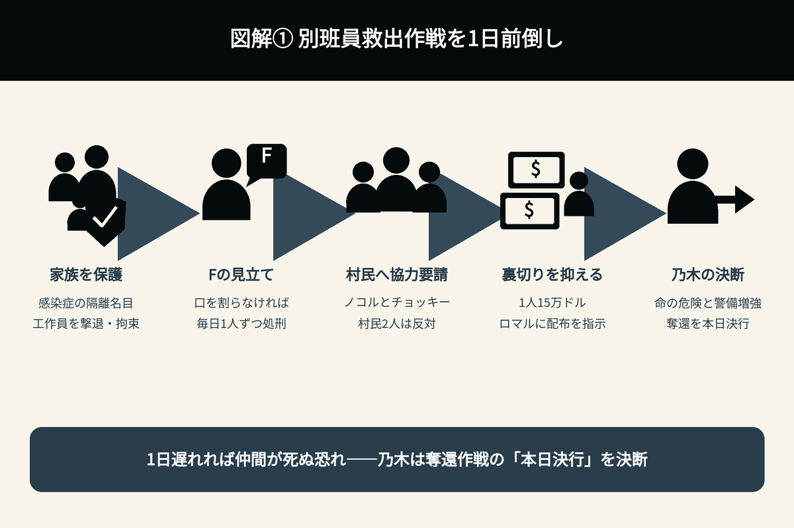
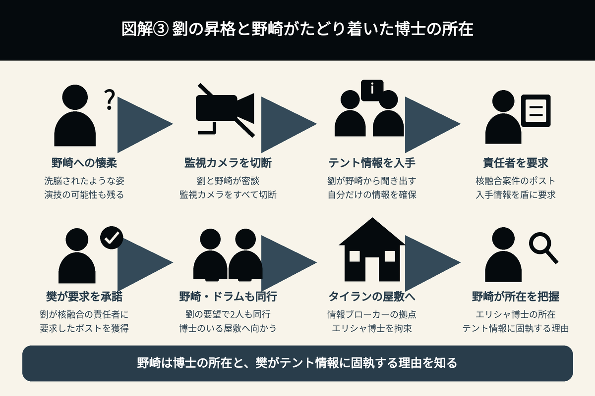
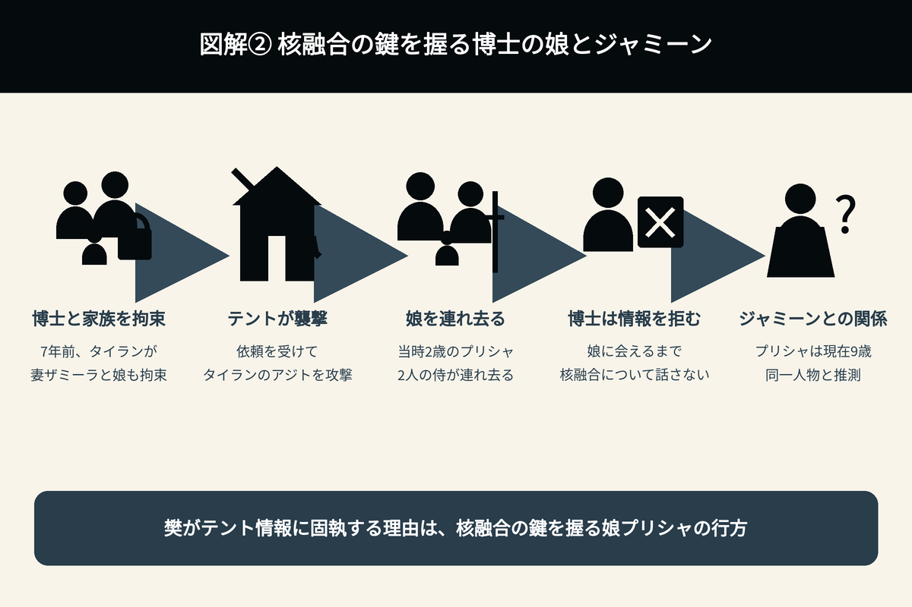

《後半戦初回》第19話
別班員救出作戦と核融合をめぐる謎
別班員救出作戦が動き出す第19話。オルコ村への協力要請、家族の安全確保、野崎と劉銘軒、エリシャ博士の娘とジャミーンにつながる人物関係・伏線・考察を整理する。

1. 別班員救出作戦が始動――オルコ村への協力要請と決行の前倒し
乃木率いるY2K部隊は、シャキ城にいるXinxi（シンシー）への情報漏えいを防ぐため、城下にあるオルコ村の村民を取り込む作戦に着手した。
まず、ノコルとチョッキーが村民の説得に当たる。シャキ城のシンシーに密告しないよう、大金を支払って協力を得るため、買収と説得を進めた。
村長の説得には成功したが、村民2人が反対したことで、新庄は「計画どおり1日待って、万全の状況で実行した方が」と提案する。しかし、ノコルは「1日1人別班員が殺される可能性がある。明日には1人死んでるかもしれんぞ」と反対した。
ここで、救出作戦のリーダーである乃木に最終判断が委ねられ、作戦を1日早めることが決定された。
村民2人は最後まで賛成しなかったが、別班員の命が危ないことに加え、シャキ城の警備態勢が増強される恐れもある。乃木は、別班員奪還を「本日決行」と決断した。
ノコルは「この後、仮に全員が賛成しても裏切り者は必ず現れる」「兄さん、ロマルにすぐ一人一人15万ドルずつ握らせるように指示してくれないか。大金を手にしたら、裏切るやつは減るはずだ」と語った。
これにより、「裏切り者は必ず現れる」という台詞は、オルコ村の住民に向けたものだったことが明らかになった。予告では、この場面の台詞が抜き出されていたのだ。
ただし、アリの裏切り疑惑が晴れたわけではなく、まだ安心はできない。
2. 別班員の家族の安全確保――櫻井司令がFに判断を求めた理由
樊林杏（ハン・リンシン）は、拘束している別班員たちの、鋼のように揺るがず、絶対に口を割らない態度に業を煮やした。そして、AIの鈴木へ「日本時間の6月7日、21時に決行」と、別班員の家族を拉致する時刻を指示した。
一方、別班側はその指示を直接聞いて把握しており、防御に動く。
日本では、感染症による隔離という名目で別班員の家族を避難させ、それぞれの自宅には特殊部隊が待機した。そして、襲ってきたXinxi（シンシー）側の工作員を、逆に撃退・拘束した。
櫻井司令は、電話で乃木に連絡する。
乃木は「シンシーがしびれをきらした…」と状況を分析した。
すると、櫻井司令は「乃木さんではなくF、あなたがハンの立場ならどうしますか」「Fの意見を聞きたいのです」と問いかけた。
すぐにFが顔を出し、「そうね～。こうなったら別班員が口を割るまで皆の前で毎日1人ずつ残酷な方法で処刑。それしかないでしょうね」と答える。
そのため、「奪還の決行を1日早めますよ。1日遅れれば1人死んじまうんでね」と告げた。
なぜ櫻井司令は、Fの存在を知っていたのか。以前から知っていたのだろうか。
また、なぜあえてFを出させ、その意見を求めたのか。

3. 家族の拉致失敗で激化する尋問――別班員・和田貢の危機
日本で別班員の家族が感染症による隔離という名目で避難し、家族の拘束に失敗したことを知った樊林杏（ハン・リンシン）は、自分の部屋を荒らして激怒した。
これにより、拘束されている別班員への尋問は過激さを極める。
シンシーの周浩然（シュウ・ハオラン）は、「一番頑丈そうな人間ほど精神的に弱い」と考え、別班員・和田貢に対して、これまでも執拗な拷問を加えてきた。
和田は、右手の指をすべて切り落とされるという、ひどい拷問を受けていた。
さらに、「情報を吐かなければ1日一人ずつ殺していく」と短刀で斬りつけられ、周の部下である李茗沢（リ・ミンヅァ）には胸部も刺されるという、ショッキングな展開が繰り広げられた。
和田の生存が危ぶまれる、最悪の事態となった。
4. 劉銘軒が核融合案件の責任者に――野崎の洗脳は演技なのか
劉銘軒（リュウ・ミンシュエン）は、野崎守をマインドコントロール下に置き、監視カメラをすべて切断して、テントの情報を聞き出した。
劉が野崎を精神的な奴隷に仕立て上げ、懐柔したという展開になっている。
劉は、自分だけがテントの情報を入手したことを盾に、樊林杏（ハン・リンシン）に対し、中国の裏組織Xinxi（シンシー）における核融合案件の責任者のポストを要求した。
樊はこれに応じ、劉は責任者のポストを手に入れる。
さらに、劉の要望どおり、野崎とドラムも同行することになった。劉は2人を連れ、奇跡の核融合を発明したとされるエリシャ・ママドフ博士を拘束している、情報ブローカーのタイラン・グリエワの屋敷へ向かった。
野崎は、劉に洗脳されているかのように目がうつろで、生気もない。しかし、別班並みの諜報員である野崎だけに、すべて演技・芝居とも考えられる。
それ以前の尋問部屋では、テント幹部について、バトラカとピヨ以外の人物を聞かれると「アリ」と答え、「ノコル」の名前は伏せていた。
その後、野崎が監視カメラを嫌がったことをきっかけに、劉と密談できる時間が生まれた。
野崎はタイラン・グリエワの屋敷へ行くことで、Xinxi（シンシー）潜入の最大の目的であるエリシャ博士の所在と、樊林杏がテントの情報に固執する理由を知った。

5. 樊林杏がテントの情報に固執する理由――エリシャ博士の娘とジャミーン
エリシャ・ママドフ博士の核融合発明を独占しようとする、中国の裏組織Xinxi（シンシー）の樊林杏（ハン・リンシン）。解体された組織テントの情報に、樊が固執している理由が判明した。
7年前、エリシャ博士は、発明を狙う情報ブローカーのタイラン・グリエワに、家族とともに拘束された。
家族には、妻のザミーラと娘のプリシャがいたという。あと一歩でエリシャ博士が核融合の真実を話すというときに、「我々はテントに襲われた」とタイランは語った。
タイランのアジトは、依頼を受けたテントに攻撃され、当時2歳だったエリシャ博士の娘、プリシャ・ママドフが連れ去られていた。
エリシャ博士は現在も、娘プリシャと会えない限り、発明については話さないとタイランに要求している。
タイランによると、プリシャを連れ去った侍は、テントのマークが付いた鋭い刀を持っていたという。
その人物たちは「年を取ったサムライ」と「若いサムライ」だったといい、野崎は、年を取った侍について「テントの主導者・ノゴーン・ベキだ」と告げた。
若い侍は、養子のアディエルだったとみられる。
現在は9歳になっているはずの娘プリシャ。その正体がジャミーンであることは、ほぼ決定的となった。ジャミーンの父アディエルは、養父として彼女を育て、守っていたと推測できる。
父・アディエルの死を知ったジャミーンは病院を抜け出し、自宅へ戻って、そこで倒れてしまった。
野崎、乃木、薫は帰国しようとしていたが、ジャミーンが病院からいなくなったことを知る。薫の強い要望で自宅へ向かい、そこで倒れているジャミーンを発見した。
薫は「この子まで失うなんて耐えられない。命に替えても守りたいの。誰だっているでしょう、そういう人。行きたければ行けばいい。私はここを離れない！」と言い放った。
ジャミーンを命に替えても守ろうとする、薫の存在も気になる。

6. 第19話でも残る伏線と謎――毛じいさん、劉銘軒の出生、乃木の号泣
毛じいさん
野崎に電光掲示板でシャキ城の情報を伝えていたのは、「毛じいさん」という、北京時代からの協力者であることが分かった。
しかし、その後の謎解きは、まだ描かれていない。
劉銘軒（リュウ・ミンシュエン）が乃木憂助に似すぎている件
劉銘軒は、5歳から日本で育ったと話している。今回の第19話では、日本で生まれたことも判明した。
一方、乃木憂助は、乃木卓が公安警察官としての身分を隠し、妻の明美とともにバルカへ渡った後、現地で誕生している。
双子であることを示す伏線はないため、何らかの血縁関係が推測される。
第11話では、シンシーへの潜入前に、野崎守が乃木卓の兄・乃木寛道と、ホテルニューオータニの1544号室で面会する謎の場面が描かれた。あの場面が、2人の関係につながる伏線なのだろうか。
また、野崎がわざと「1544」と口にしたことも伏線ではないかと思っていたが、その意味はまだ明らかになっていない。
乃木が号泣する理由
ノコルの「裏切り者は必ず現れる」という台詞は、オルコ村の村民に向けたものだった。
一方、予告で描かれた乃木の号泣の理由は、まだ解明されていない。
誰かが死亡するのだろうか。その人物は、ノコルなのか。
第19話で新たに分かったこと
| 項目 | 第19話で判明したこと |
|---|---|
| 別班員5人の奪還作戦 | オルコ村の協力を得て、当初の予定より1日早く決行されることになった |
| 「裏切り者は必ず現れる」の意味 | ノコルが警戒していたのは、オルコ村の住民から密告者が出ることだった |
| 別班員の家族 | シンシーによる拉致計画を別班側が事前に把握し、家族を避難させていた |
| 櫻井司令とF | 櫻井司令がFの存在を知っており、乃木ではなくFの判断を直接求めた |
| 和田貢 | シンシーの激しい拷問を受け、さらに命の危険が迫っている |
| 劉銘軒 | 野崎からテントの情報を引き出したことを利用し、シンシーの核融合案件の責任者となった |
| エリシャ・ママドフ博士 | 奇跡の核融合を発明したとされ、現在もタイラン・グリエワに拘束されている |
| プリシャ・ママドフ | エリシャ博士の娘。7年前、テントによって連れ去られていた |
| ジャミーン | エリシャ博士の娘プリシャであることが、ほぼ決定的となった |
| アディエル | プリシャを連れ去った「若いサムライ」とみられ、その後、養父としてジャミーンを育てていたと考えられる |
| 毛じいさん | 北京時代からの野崎の協力者で、電光掲示板を使ってシャキ城の情報を伝えていた |
| 劉銘軒の出生 | 5歳から日本で育っただけでなく、日本で生まれていたことも判明した |
第19話の見どころ
第19話で一番大きかったのは、別班員5人の奪還作戦が、ついに実行段階へ入ったことです。
家族を人質に取ろうとするシンシーの動きを別班側が先読みし、日本では家族を避難させ、襲撃してきた工作員を逆に拘束することに成功しました。
しかし、その結果としてシンシーはさらに追い詰められ、拘束している別班員への尋問は一段と過激になります。
特に和田貢は、すでに壮絶な拷問を受けているうえ、「情報を吐かなければ1日一人ずつ殺していく」と宣告されました。
だからこそ乃木は、準備を完全に整えてからではなく、仲間の命を優先して奪還作戦を1日前倒しするという大きな決断を下します。
そして今回、もう一つ物語を大きく動かしたのが、エリシャ・ママドフ博士とジャミーンの関係です。
7年前、テントによって連れ去られたエリシャ博士の娘プリシャ。そのプリシャこそが、現在のジャミーンであることがほぼ決定的となりました。
これまで別々に見えていた、テント、アディエル、ジャミーン、エリシャ博士、核融合、そしてシンシーが、一つの線でつながり始めています。
一方、野崎は本当に劉銘軒に洗脳されたのか。
別班並みの諜報能力を持つ野崎だけに、洗脳されたように見える姿そのものが芝居であり、劉を利用してシンシーの核心へ近づいている可能性も残っています。
さらに気になるのが、櫻井司令がFの存在を知っていたこと、劉銘軒が日本生まれだったこと、そして第11話から残されている「1544」の謎です。
そして、まだ回収されていない最大の場面が、予告で描かれた乃木の号泣。
別班員5人の奪還作戦は成功するのか。
ノコルをはじめ、乃木とともにシャキ城へ向かう仲間の中から、本当に犠牲者が出てしまうのか。
第19話は、別班員奪還という目の前の戦いだけではなく、これまで点として描かれてきた多くの謎がつながり始めた、後半戦の重要な一話となりました。
第18話のあらすじ・伏線・考察へ
第20話（準備中）